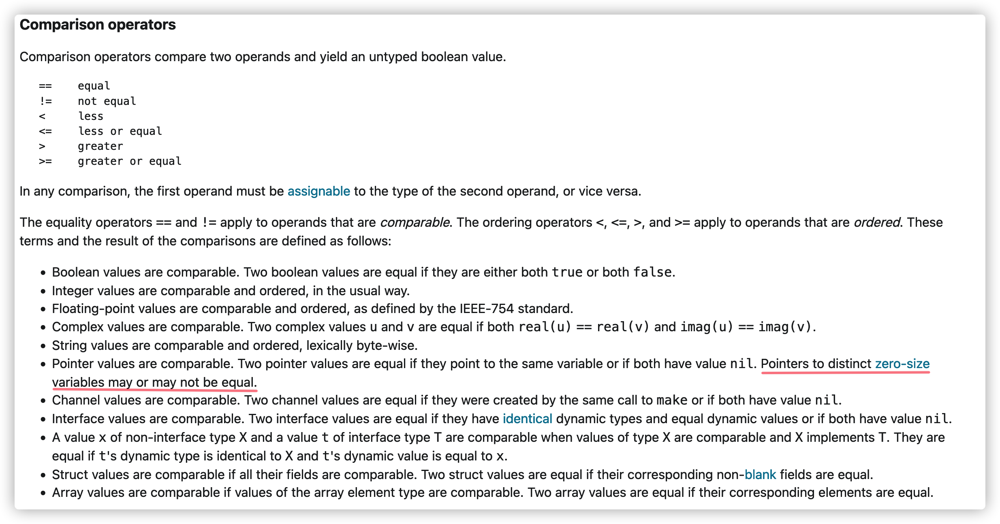

空結構體
空結構體指的是沒有任何字段的結構體。
大小與內存地址
空結構體佔用的內存空間大小爲零字節，並且它們的地址可能相等也可能不等。當發生內存逃逸時候，它們的地址是相等的，都指向了 runtime.zerobase。
// empty_struct.go
type Empty struct{}
//go:linkname zerobase runtime.zerobase
var zerobase uintptr // 使用go:linkname編譯指令，將zerobase變量指向runtime.zerobase
func main() {
a := Empty{}
b := struct{}{}
fmt.Println(unsafe.Sizeof(a) == 0) // true
fmt.Println(unsafe.Sizeof(b) == 0) // true
fmt.Printf("%p\n", &a) // 0x590d00
fmt.Printf("%p\n", &b) // 0x590d00
fmt.Printf("%p\n", &zerobase) // 0x590d00
c := new(Empty)
d := new(Empty)
fmt.Sprint(c, d) // 目的是讓變量c和d發生逃逸
println(c) // 0x590d00
println(d) // 0x590d00
fmt.Println(c == d) // true
e := new(Empty)
f := new(Empty)
println(e) // 0xc00008ef47
println(f) // 0xc00008ef47
fmt.Println(e == f) // flase
}
從上面代碼輸出可以看到 a, b, zerobase 這三個變量的地址都是一樣的，最終指向的都是全局變量runtime.zerobase(runtime/malloc.go)。
// base address for all 0-byte allocations
var zerobase uintptr
我們可以通過下面方法再次來驗證一下 runtime.zerobase 變量的地址是不是也是0x590d00：
go build -o empty_struct empty_struct.go
go tool nm ./empty_struct | grep 590d00
# 或者
objdump -t empty_struct | grep 590d00
執行上面命令輸出以下的內容：
590d00 D runtime.zerobase
# 或者
0000000000590d00 g O .noptrbss 0000000000000008 runtime.zerobase
從上面輸出的內容可以看到 runtime.zerobase 的地址也是 0x590d00。
接下來我們看看變量逃逸的情況：
go run -gcflags="-m -l" empty_struct.go
# command-line-arguments
./empty_struct.go:15:2: moved to heap: a
./empty_struct.go:16:2: moved to heap: b
./empty_struct.go:18:13: ... argument does not escape
./empty_struct.go:18:31: unsafe.Sizeof(a) == 0 escapes to heap
./empty_struct.go:19:13: ... argument does not escape
./empty_struct.go:19:31: unsafe.Sizeof(b) == 0 escapes to heap
./empty_struct.go:20:12: ... argument does not escape
./empty_struct.go:21:12: ... argument does not escape
./empty_struct.go:22:12: ... argument does not escape
./empty_struct.go:24:10: new(Empty) escapes to heap
./empty_struct.go:25:10: new(Empty) escapes to heap
./empty_struct.go:26:12: ... argument does not escape
./empty_struct.go:29:13: ... argument does not escape
./empty_struct.go:29:16: c == d escapes to heap
./empty_struct.go:31:10: new(Empty) does not escape
./empty_struct.go:32:10: new(Empty) does not escape
./empty_struct.go:35:13: ... argument does not escape
./empty_struct.go:35:16: e == f escapes to heap
可以看到變量 c 和 d 逃逸到堆上，它們打印出來的都是 0x591d00，且兩者進行相等比較時候返回 true。而變量 e 和 f 打印出來的都是0xc00008ef47，但兩者進行相等比較時候卻返回false。這因爲Go有意爲之的，當空結構體變量未發生逃逸時候，指向該變量的指針是不等的，當空結構體變量發生逃逸之後，指向該變量是相等的。這也就是 Go官方語法指南 所說的：
Pointers to distinct zero-size variables may or may not be equal

危險 注意：
不論逃逸還是未逃逸，我們都不應該對空結構體類型變量指向的內存地址是否一樣，做任何預期。
當一個結構體嵌入空結構體時，佔用空間怎麼計算？
空結構體本身不佔用空間，但是作爲某結構體內嵌字段時候，有可能是佔用空間的。具體計算規則如下：
- 當空結構體是該結構體唯一的字段時，該結構體是不佔用空間的，空結構體自然也不佔用空間
- 當空結構體作爲第一個字段或者中間字段時候，是不佔用空間的
- 當空結構體作爲最後一個字段時候，是佔用空間的，大小跟其前一個字段保持一致
type s1 struct {
a struct{}
}
type s2 struct {
_ struct{}
}
type s3 struct {
a struct{}
b byte
}
type s4 struct {
a struct{}
b int64
}
type s5 struct {
a byte
b struct{}
c int64
}
type s6 struct {
a byte
b struct{}
}
type s7 struct {
a int64
b struct{}
}
type s8 struct {
a struct{}
b struct{}
}
func main() {
fmt.Println(unsafe.Sizeof(s1{})) // 0
fmt.Println(unsafe.Sizeof(s2{})) // 0
fmt.Println(unsafe.Sizeof(s3{})) // 1
fmt.Println(unsafe.Sizeof(s4{})) // 8
fmt.Println(unsafe.Sizeof(s5{})) // 16
fmt.Println(unsafe.Sizeof(s6{})) // 2
fmt.Println(unsafe.Sizeof(s7{})) // 16
fmt.Println(unsafe.Sizeof(s8{})) // 0
}
當空結構體作爲數組、切片的元素時候：
var a [10]int
fmt.Println(unsafe.Sizeof(a)) // 80
var b [10]struct{}
fmt.Println(unsafe.Sizeof(b)) // 0
var c = make([]struct{}, 10)
fmt.Println(unsafe.Sizeof(c)) // 24，即slice header的大小
用途
由於空結構體佔用的空間大小爲零，我們可以利用這個特性，完成一些功能，卻不需要佔用額外空間。
阻止unkeyed方式初始化結構體
type MustKeydStruct struct {
Name string
Age int
_ struct{}
}
func main() {
persion := MustKeydStruct{Name: "hello", Age: 10}
fmt.Println(persion)
persion2 := MustKeydStruct{"hello", 10} //編譯失敗，提示： too few values in MustKeydStruct{...}
fmt.Println(persion2)
}
實現集合數據結構
集合數據結構我們可以使用map來實現：只關心key，不必關心value，我們就可以值設置爲空結構體類型變量（或者底層類型是空結構體的變量）。
package main
import (
"fmt"
)
type Set struct {
items map[interface{}]emptyItem
}
type emptyItem struct{}
var itemExists = emptyItem{}
func NewSet() *Set {
set := &Set{items: make(map[interface{}]emptyItem)}
return set
}
// 添加元素到集合
func (set *Set) Add(item interface{}) {
set.items[item] = itemExists
}
// 從集合中刪除元素
func (set *Set) Remove(item interface{}) {
delete(set.items, item)
}
// 判斷元素是否存在集合中
func (set *Set) Contains(item interface{}) bool {
_, contains := set.items[item]
return contains
}
// 返回集合大小
func (set *Set) Size() int {
return len(set.items)
}
func main() {
set := NewSet()
set.Add("hello")
set.Add("world")
fmt.Println(set.Contains("hello"))
fmt.Println(set.Contains("Hello"))
fmt.Println(set.Size())
}
作爲通道的信號傳輸
使用通道時候，有時候我們只關心是否有數據從通道內傳輸出來，而不關心數據內容，這時候通道數據相當於一個信號，比如我們實現退出時候。下面例子是基於通道實現的信號量。
// empty struct
var empty = struct{}{}
// Semaphore is empty type chan
type Semaphore chan struct{}
// P used to acquire n resources
func (s Semaphore) P(n int) {
for i := 0; i < n; i++ {
s <- empty
}
}
// V used to release n resouces
func (s Semaphore) V(n int) {
for i := 0; i < n; i++ {
<-s
}
}
// Lock used to lock resource
func (s Semaphore) Lock() {
s.P(1)
}
// Unlock used to unlock resource
func (s Semaphore) Unlock() {
s.V(1)
}
// NewSemaphore return semaphore
func NewSemaphore(N int) Semaphore {
return make(Semaphore, N)
}